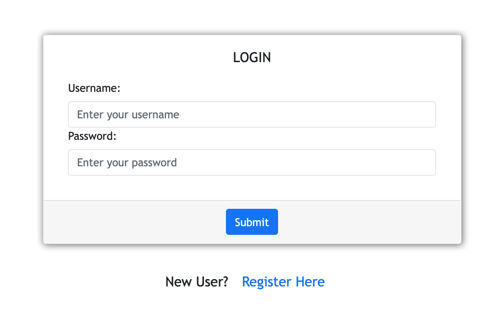
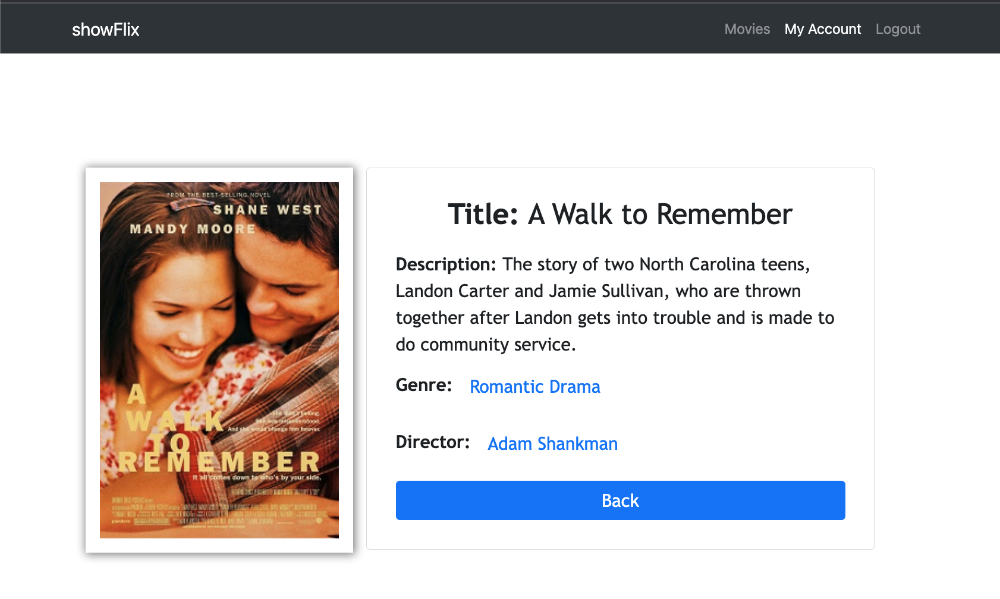
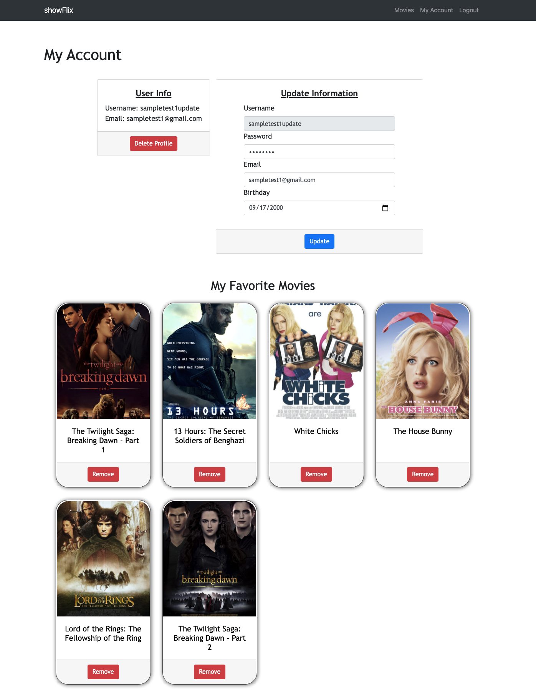

showFlix with React - Case Study

Overview
showFlix is a web application that targets users who love and are interested in learning about movies. Users are able to create an account, update their personal information, as well as explore a list of movies, directors, and genres. They can also personalize their account by building their own favorite movies list.
Purpose
showFlix is a web application that targets users who love and are interested in learning about movies. Users are able to create an account, update their personal information, as well as explore a list of movies, directors, and genres. They can also personalize their account by building their own favorite movies list.
Objective
Creating my showFlix app allowed me to practice both the client and server sides of web development using JavaScript technologies. This project will be displayed on my portfolio as a complete web application built using the MERN (MongoDB, Express, React, Node.js) tech stack. My full-stack application will be useful for movie enthusiasts who want access to information about different types of movies.
Creating the client-side
The front-end portion was my favorite part since I was able to design what the users can see and interact with. For this part, I learned how to use the React library(including React Redux) to create a single-page application that is able to display multiple views such as the login view, registration view, profile view that includes the user’s favorite movies list, list of movies, data of a selected movie, genre view, and director view (see below for a few examples). Furthermore, I used React Bootstrap to provide a responsive design for my web application.
Creating the server-side
This was the first complete application that I had ever worked on, meaning I had to build the back-end myself. For the back-end portion, I created a REST API using Express and Node.js which interacts with a database using MongoDB that stores the data for all the movies. To test all my API endpoints, I used Postman API to make sure everything was functioning properly, meaning all HTTP requests were fulfilled and can successfully perform all CRUD (Create, Read, Update, Delete) operations (see image on the left).
Login View
Single Movie View
Profile View
Duration
My showFlix app took about 2.5 months to complete, which was the longest I have spent on finishing a project for the program.
Challenges
Out of all the projects I have worked on, this has been the most fulfilling yet. Those 2.5 months that I spent working on this web application were filled with excitement because I knew I was gaining experience with the top technologies used in the world today. They were also filled with frustration and exhaustion from getting various errors that I truly struggled to find solutions for. I looked to my mentor, tutor, and at resources such as Stack Overflow to help me. Because I built this web application from the ground up, I knew I caused every error that I encountered along the way, but it allowed me to explore multiple situations that I can potentially run into working in the industry. I definitely see this as a big win. I also had a hard time learning React Redux, but this was a great project to expose myself to this useful tool. Overall, I believe that I learned the most from building my showFlix app, and I am very grateful!
Credits
Lead Developer: Kyla Quilos
Tutor: Andrew Muscara
Mentor: John Akhilomen